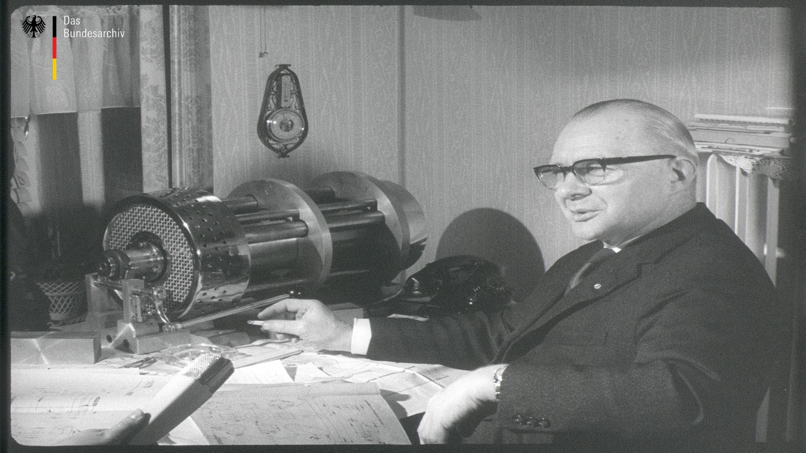

Between the 1950s and 1970s, "ferrite magnets began outselling AlNiCo magnets in the 1960s".
Due to their similar color appearance in dark grey, it is not possible to distinguish, from a B/W Footage,
between both types. But furthermore in the Article it is said, Ferrite magnets are extremely brittle,
so they couldn’t (and still can’t) be machined. Therefore it is very likely Mr. Lüling was using AlNiCo magnets.
This is also backed up to his own statement during the Interview from 00'41'', as he claims that he was already able
to neutralize Magnets since 1954.
A single Magnet is not mentioned once from him.
The Frames 0753 - 0832 and 1856 - 1896 are showing the just explained process.
In Red marked, on Top and on the Bottom of the 3-Blocks, are two arc shaped Metal Plates.
The upper Arc is swinging back and forth, three more of these Arcs, four in total, are mounted on one
round Metal Bar to swing simultaneously.
These two Arcs covering the 3-Blocks forming together the "Magnetsystem".
Due to the dark grey appearance, the 1st and the 3rd Block are very likely the actually Magnets.
In Frame 0655, we can see a very similar to identical Setup on the opposing side of the
swinging Arcs. But instead of swinging, they are not only standing still, the upper Arc
is even parked away in a fixed Position. The underside is clearly visible, also its radiused shape.
The Frames 2475 - 2545 are showing one Chamber, almost from the inside. It is demonstrating
while the Arcs are sitting on the 3-Blocks, the Armature can pass. But in order to display this
remarkable view, one Arc needs to be opened and parked away, in order to open the view
for the Camera. This would led to have the "Magnetsystem" open, or rather in a not neutralized
State, so the Armature wouldn't be able to pass. To avoid this, an empty Arc is placed on the 3-Blocks.
We can clearly see that groove, that is supposed to hold the Arm, which is attached to the Bar.
In Frame 0866, in the lower right corner, we can see a part of Mr. Lülings technical Drawing.
This shape shows a bearing shell of a swinging Metal Bar. Also seen in Frame 0655, marked in Blue.


A couple Frames later, in 0897, we can see almost the entire Drawing. If we zoom into that section,
we can clearly recognize 4 times this bearing shell, and 4 times a rectangular shape, plus a middle
hole for the main axle. These rectangular shapes represent the places that can hold the 3-Blocks.
And the bearing shell represent the place to hold 4 Metal Bars.
In Frame 1675, 3 of the 4 Metal Bars can be seen. The 4th one is covered by the Flywheel.
Conclusion: Mr. Lüling's own drawings, backed up with a lot of visual details in the footage,
are showing a symmetrical design of his Motor(s).
In one Chamber, two T-shaped Armatures are forming one Rotor.
For each Armature, there is one Set of 3-Blocks with 2 moveable Arcs,
a lower and an upper Arc.
Makes in total, 4 swinging Arcs in 4 Chambers. -> Type 4x4 Motor
along with a Date, which I can't read, a scale M1:2,5
and right below "ZCHNGS. NR. M-2-3"
ZCHNGS. NR. is short and stands for "Zeichnungs Nummer", the Drawing No.
But more important, we can clearly see, that where all the other Information, like
Name and Company etc., are supposed to be, it is covered with a piece of Paper.

along with a Date 15.6.62 , the scale M1:2,5
and right below "ZCHNGS. NR. M-4-3"
And again, we can clearly see, that crucial Information are covered with a piece of Paper.
Why would he do that?
We do have some theories about this, which are quite reasonable, logic and far less dramatic than usual.
But here is not the place to put them, the Forum is.